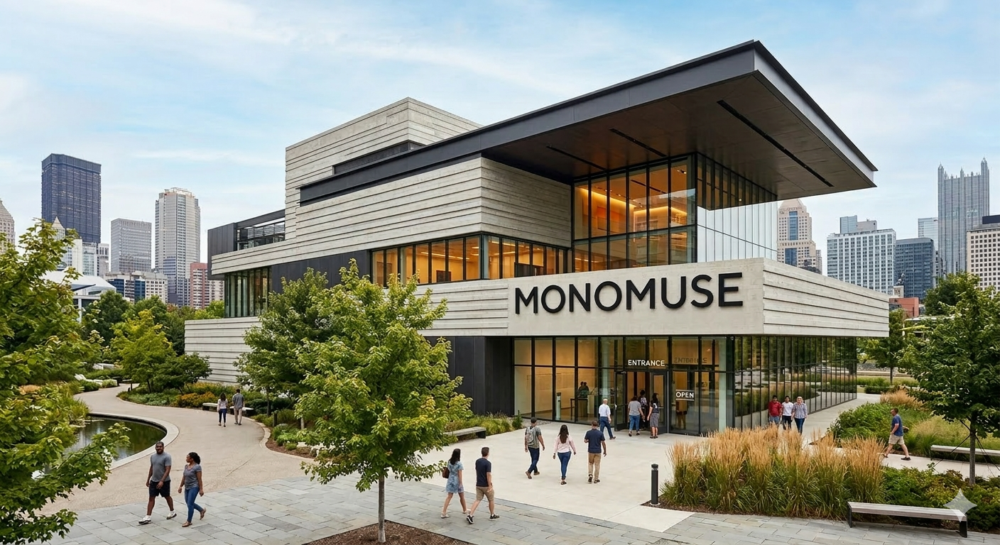

Mission Statement
MonoMuse is dedicated to exploring the evolving relationship between art, technology, and society. The museum highlights innovative exhibitions that showcase how digital tools, emerging technologies, and human creativity are shaping the future of artistic expression.
Who MonoMuse Serves
MonoMuse serves artists, students, researchers, and visitors who are interested in the intersection of art and technology. The museum welcomes people of all backgrounds who want to explore innovative exhibitions and interactive creative experiences.
Founding Year
MonoMuse was founded in 2016 with the goal of creating a space where art, technology, and human creativity could come together through immersive exhibitions and digital media.
Milestones
- 2016: MonoMuse opens with its first exhibition on digital storytelling.
- 2018: Launch of the Interactive Media Lab for hands-on creative coding.
- 2023: Expansion of the museum and international artist collaborations.